Why choose Woolice Felts?
- 100% handmade with attention to detail
- Each piece is one of a kind
- Created with love and care
- Based on Your pet’s real personality
- Over 10 years of experience
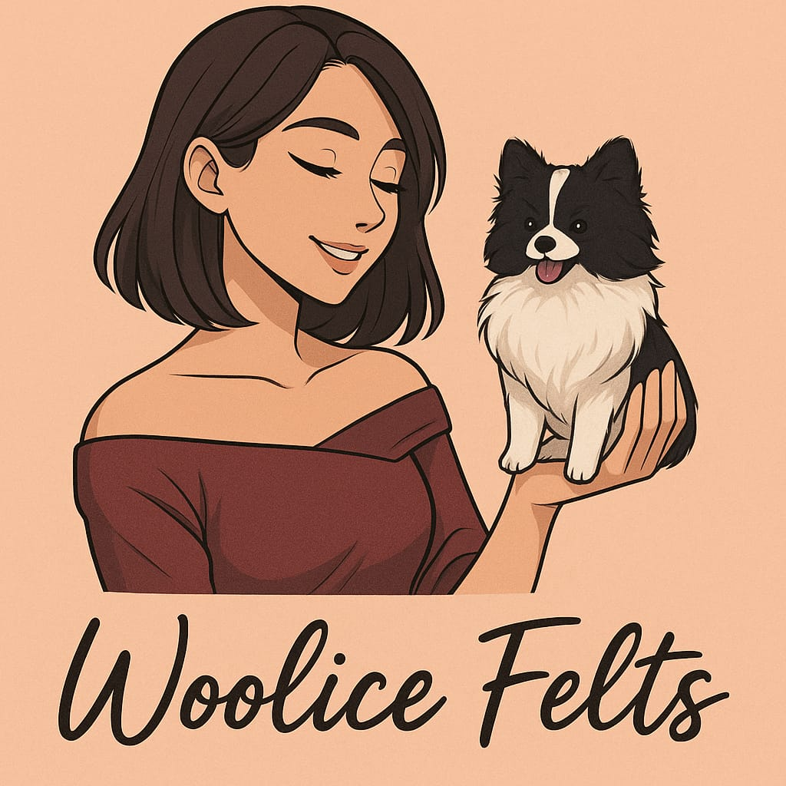
A unique handmade portrait of Your dog, created from Your photos with love and attention to every detail.
Order Your Custom Piece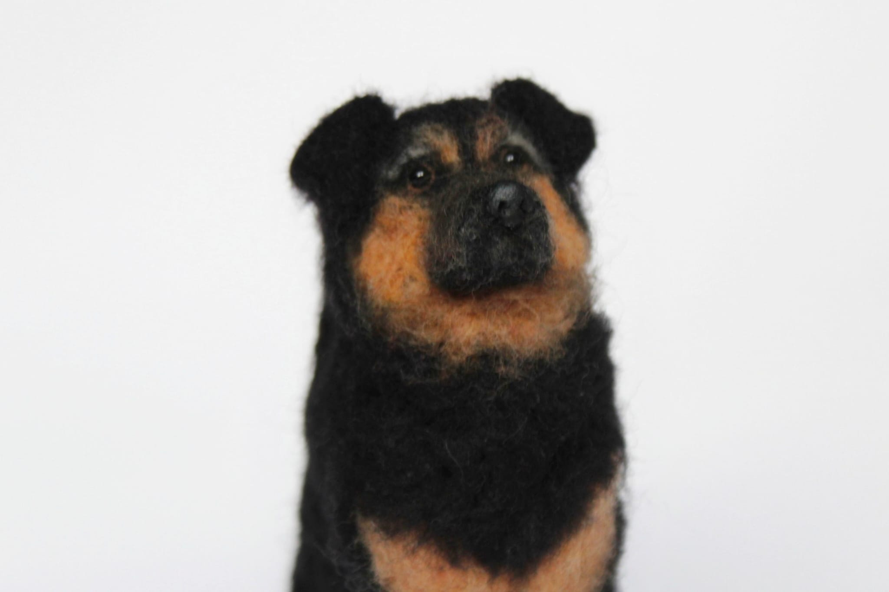

Every sculpture is unique and made to capture the spirit of each dog.
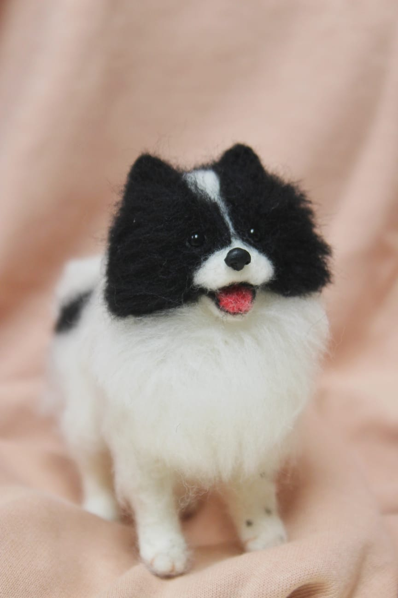
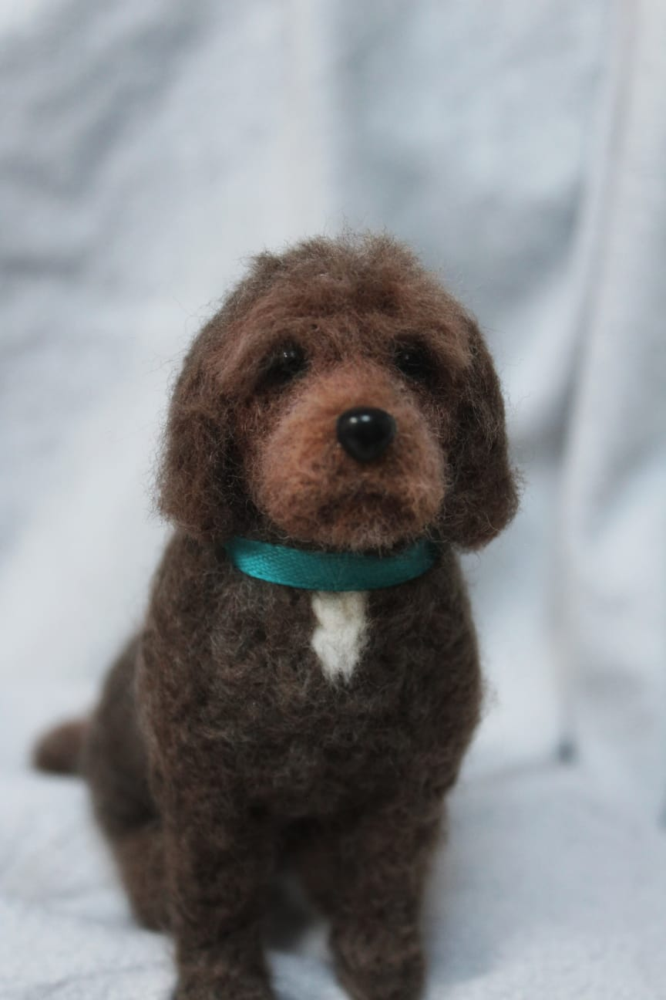
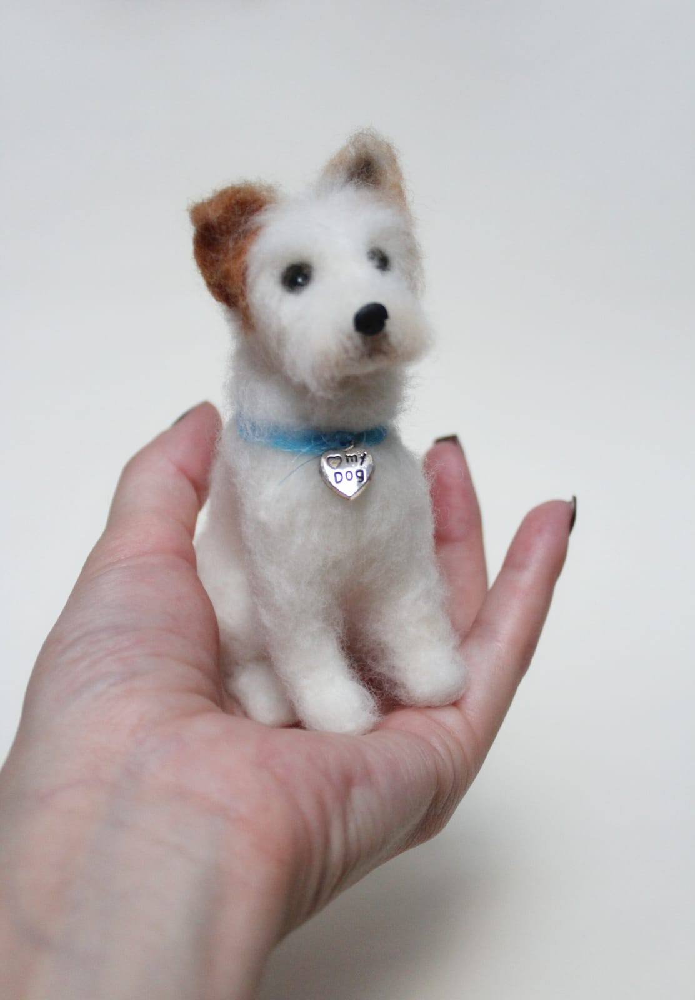
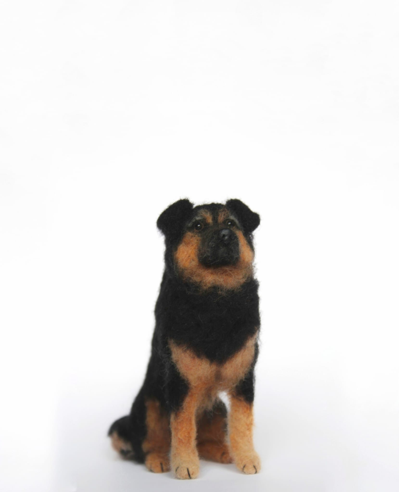
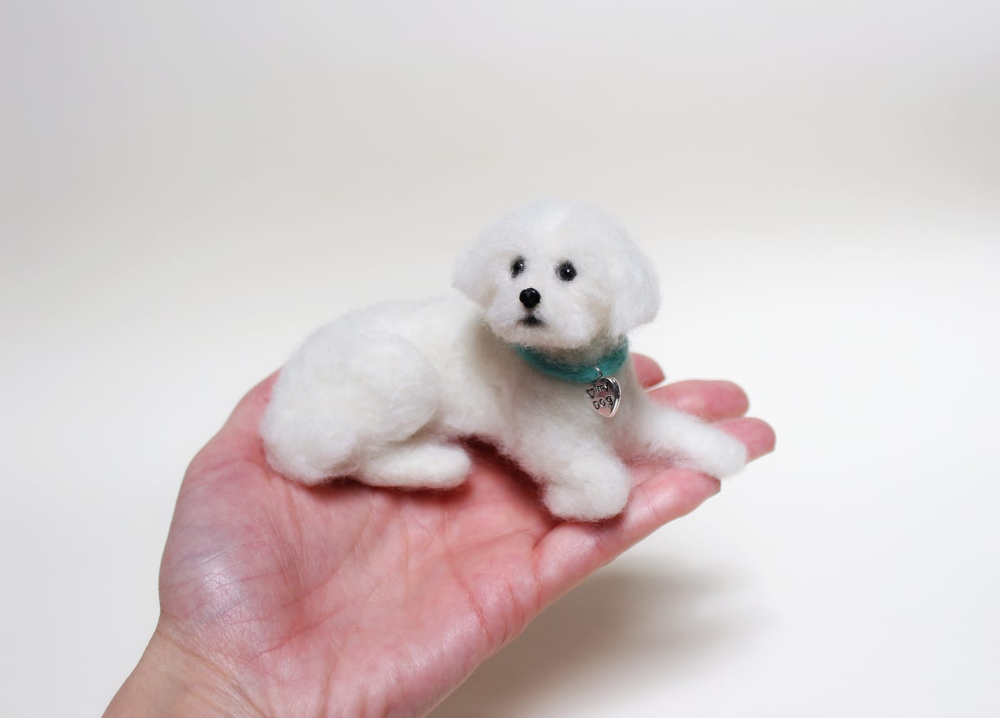
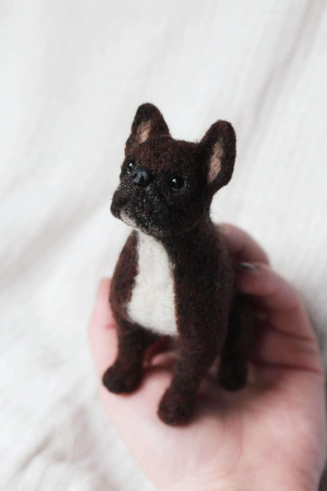
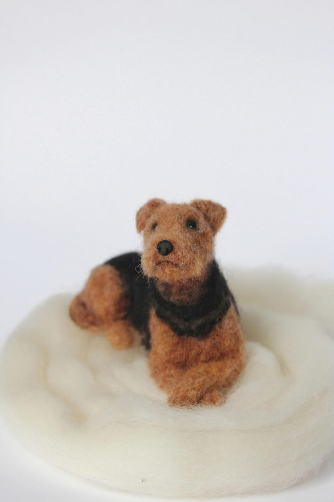
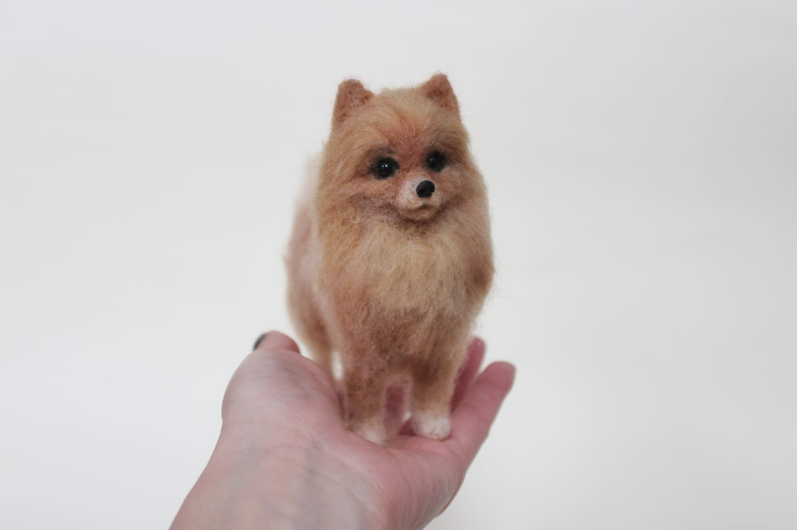
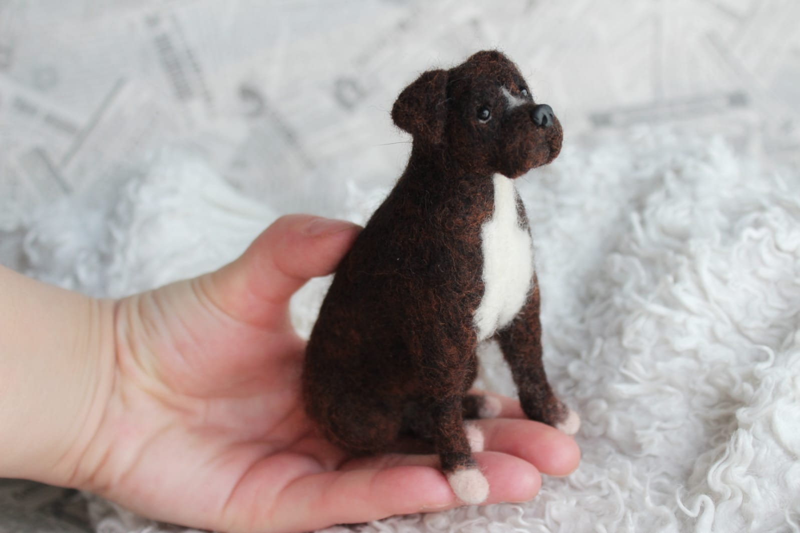
Each sculpture is made to order from Your photos.
 Order now
Order now
Hi, I’m Kristina, the artist behind Woolice Felts. I started my journey with needle felting over 10 years ago, combining my love for animals and creativity into something truly meaningful. What began as a simple passion slowly grew into a way of preserving special memories through art. Today, I create handmade needle-felted dog sculptures, each one carefully crafted to capture the unique personality of your pet. Every piece is made to order, based on your photos, with attention to even the smallest details. I understand how important pets are — they are family. That’s why I put so much care, patience, and love into every sculpture I make. No two pieces are ever the same, just like no two dogs are the same. Thank You for being here and trusting me with something so personal.
How long does it take?
Each sculpture takes approximately 6–8 weeks to complete, depending on current orders.
What kind of photos should I send?
Clear photos from different angles (front, side) help me capture Your pet’s details as accurately as possible.
Do you ship worldwide?
Yes, I ship worldwide.
Can I request changes?
Yes, small adjustments can be made during the process to ensure you’re happy with the result.
Have questions or special requests?
Email: mywoolice@gmail.com
Instagram: @woolicefelts